Before you start
- Open virtual-patient-clinic.ml-capstone.cs.byu.edu in Chrome or Edge on a laptop.
- For an account, email Quinn Snell (snell@cs.byu.edu).
- Connect to the BYU VPN or the campus network first; the site isn't reachable from elsewhere yet.
- Use a headset if you can. Talking works with the laptop's microphone too: hold the space bar while you speak.
- The cases are draft clinical content awaiting School of Medicine review, and the video faces are generated: no real person, and also awaiting review.
A student encounter
1Pick a patient
The clinic lists any patients a course has assigned, and a practice clinic that's open anytime and not graded.

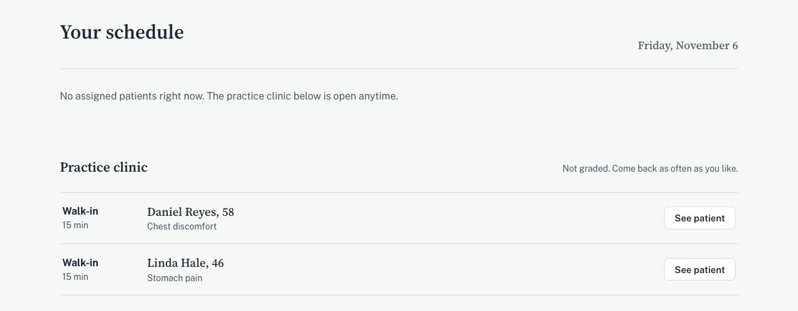
2Read the door chart
Reason for visit, setting, triage vitals and the time allowed, as on a real clinic door. Students can test their microphone, then enter the room; the clock starts then.

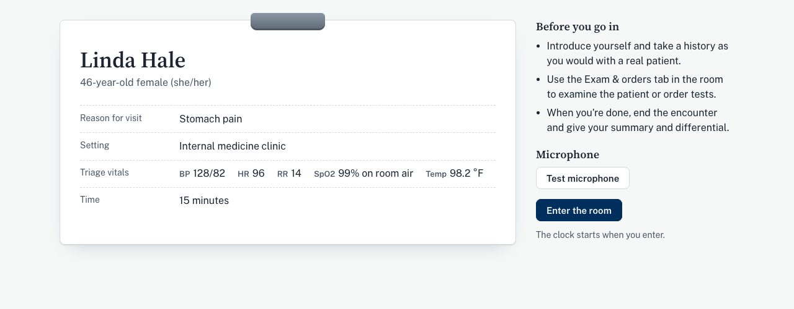
3Interview the patient
Students speak (hold the space bar, or hands-free with a headset) or type. The patient answers in her own voice about two seconds later, and her face moves with her words and shows how she feels: worried, tearful, irritated, relieved.
She shares what the case allows, when it's asked well. Some details come only if the student builds rapport. She also reacts to how the student talks: rushed questions and interruptions make her shorter and more guarded.
Faculty choose each case's patient: a photoreal video face, an animated 3D one, or a portrait.

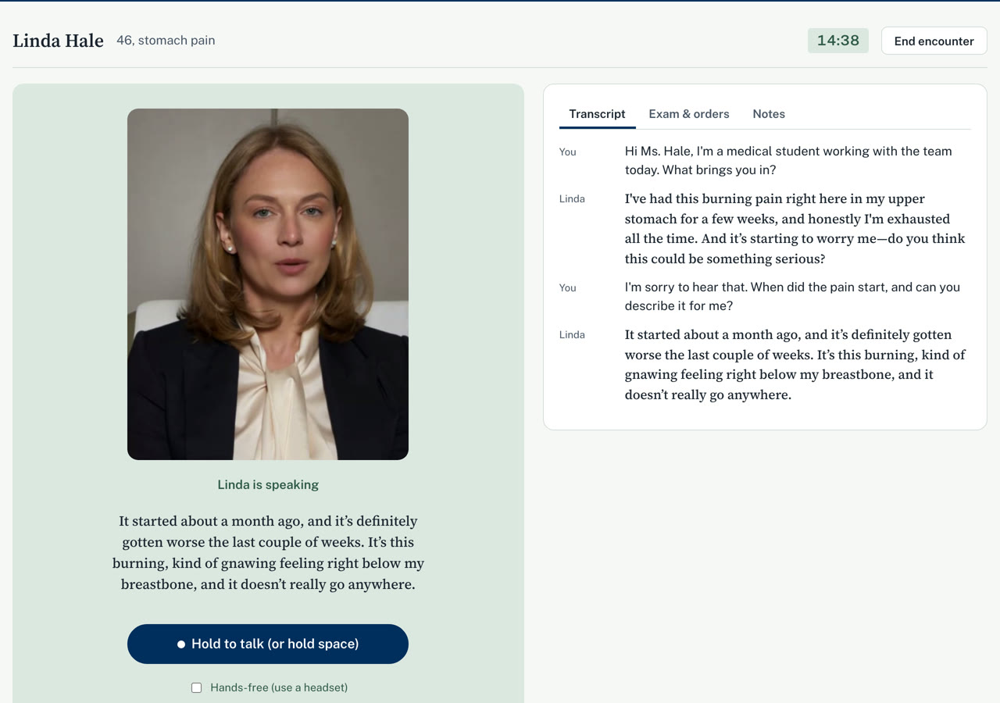
4Examine and order tests
The same menu of about 80 exams, labs and imaging studies, with a search box, appears for every case, so it never hints at the diagnosis. Results appear in the transcript; ordering imaging can show the case's image.

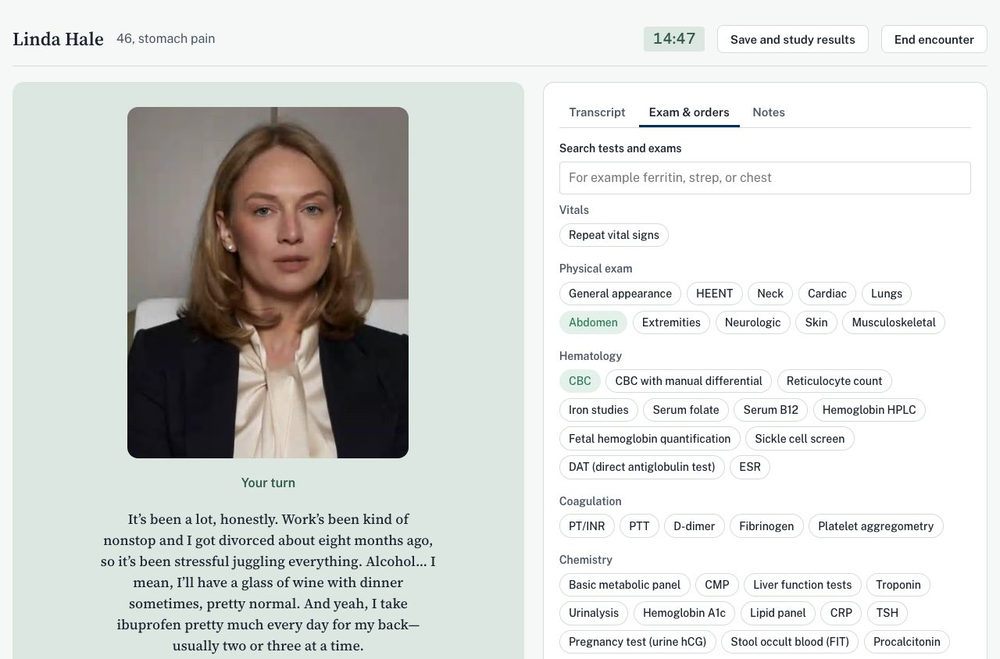
5Study the results and come back
Once a lab or imaging result is back, students can choose Save and study results. They leave the room with a report of what they've heard and found so far: a summary, each result, and the whole conversation. The clock stops while they're out.
When they're ready, they start a follow-up visit, tell the patient what the results mean, and answer the patient's questions. How well they explain it gets its own score.
Faculty can turn this off for an assignment.

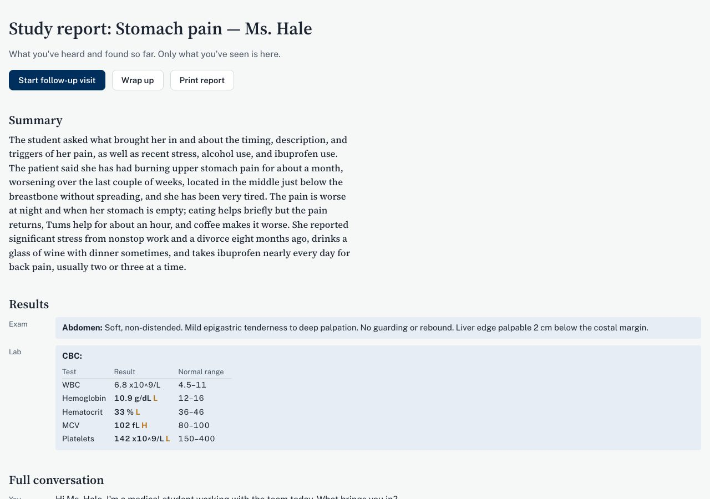
6Present the patient
After ending the encounter, students give a one-line summary, a ranked differential, what the results mean and a treatment plan, as they would to an attending.

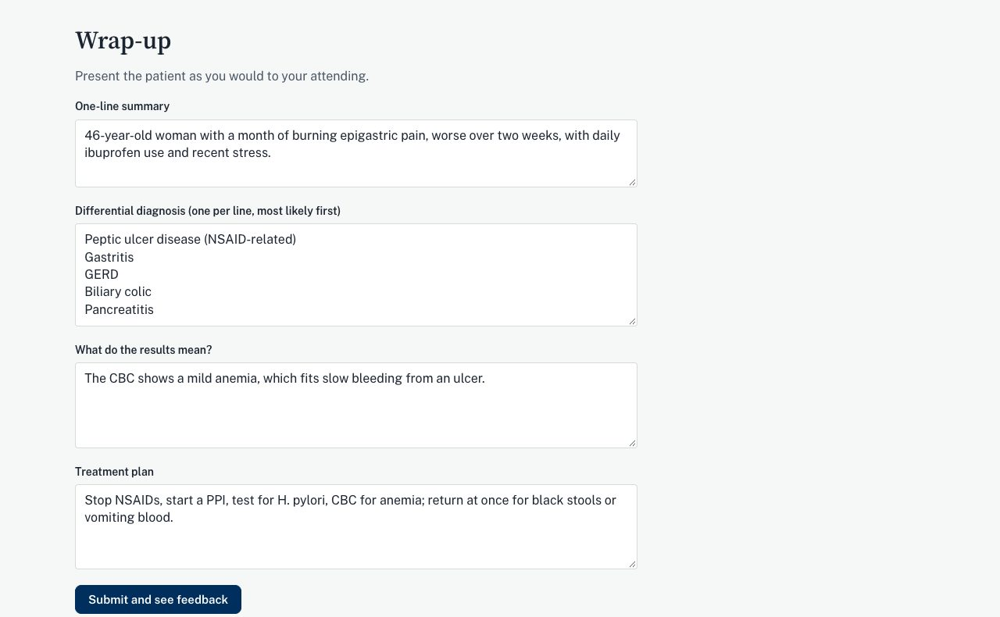
7Read the feedback
A score for the history, the workup (the tests that were needed, and the cost against a budget), communication (based on the Calgary-Cambridge guide), clinical reasoning and the treatment plan, plus the follow-up visit when there is one. Each case sets what every section is worth. Critical items that were missed are flagged, and the student gets three concrete things to work on.
Every checklist item links to the turns in the transcript where it happened, so students and faculty can see the evidence.
For assigned encounters, faculty can hold feedback until they've reviewed it.

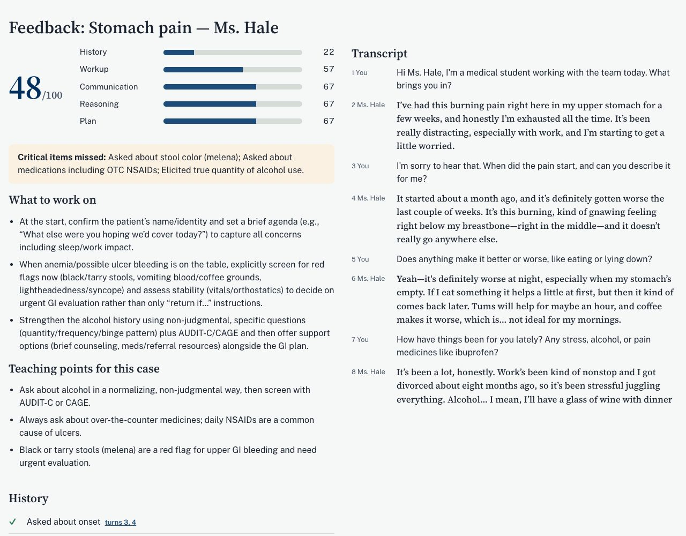
What faculty do
8Write and tune cases
Each case defines the patient (history, personality, what they'll reveal and when), the findings, and how it's graded. Choose New patient and fill in six steps, in any order, or start from a paragraph with New case with AI.
Your work saves itself as you type, so you can stop and carry on from any computer. Each step shows what's left, and a box says what students would find if you saved now.
A patient you save stays a draft until a faculty member signs off on it (step 9). Step 2 also sets the patient's voice and face, with a preview.
Some settings are ready for features still being built: allergies and prescribing, other people in the room (such as a parent), results that come back at a later visit, and extra test packs. You can fill them in now; the editor marks them Not used by students yet, and they start working when each feature arrives.

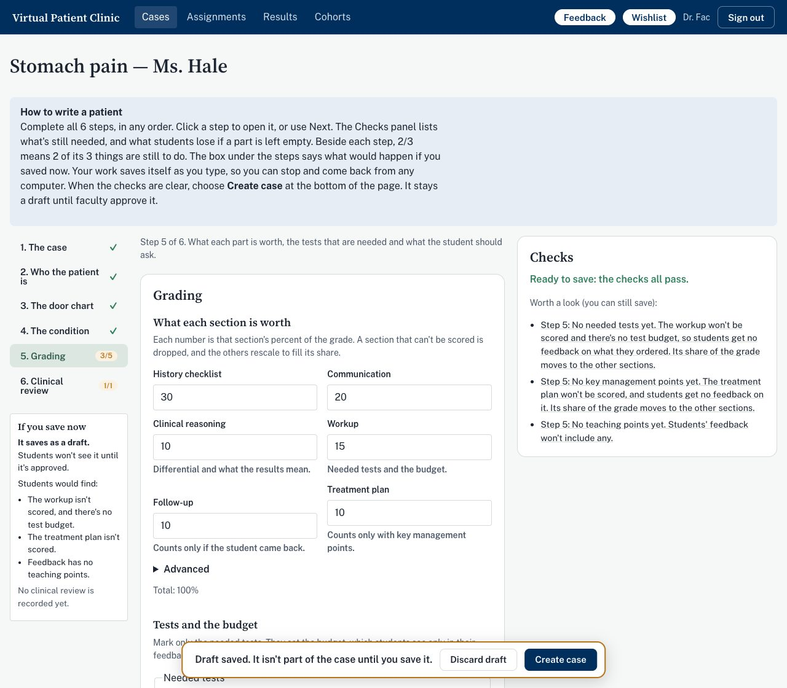
The patient's face, in step 2: pick one, set a backup, and see it speak.

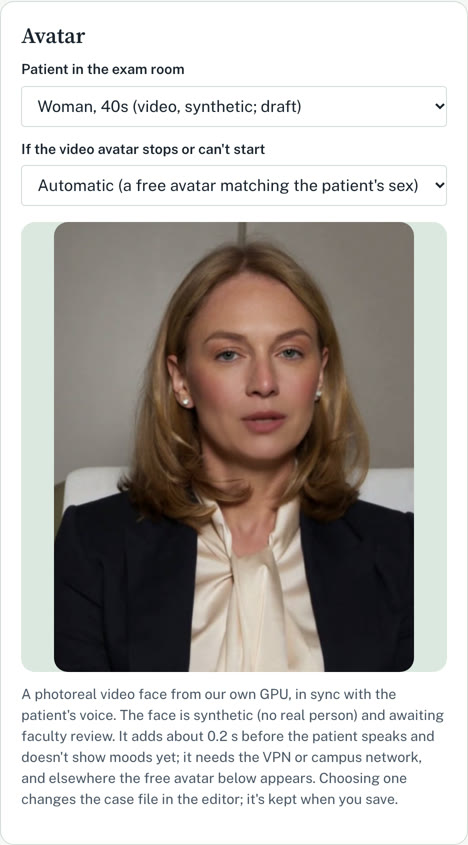
9Sign off and comment
New, coming to the clinic with its next update.
Students see a case only after a faculty member signs off on it. In the case's Review panel, tick that you've checked this version for clinical accuracy, add a note if you like, and choose Sign off and approve. You can sign off on a case you wrote. The case list and the editor's last step, now called Sign-off, then show who signed off and when. Saving a new version needs a new sign-off.
Colleagues can leave comments on the whole case, a step, or one field, in the panel under Review. Click a comment to jump to what it's about; reply, and resolve it when it's handled. The case list counts open comments and can show only the cases that still need a sign-off.

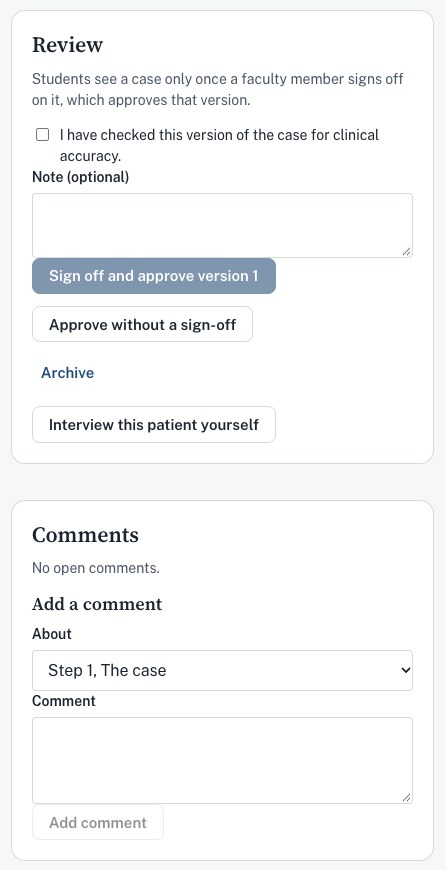
10Review encounters
Results lists every encounter. A review shows the student's wrap-up, the scores and the full transcript. Faculty can override any score (every change is logged) and release the feedback to the student.

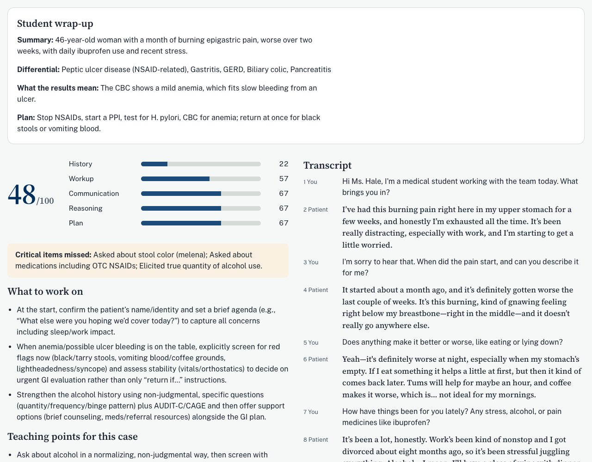
Try it in ten minutes
- Sign in, open the practice clinic, and see Linda Hale (stomach pain) or Daniel Reyes (chest discomfort).
- Introduce yourself and take a history out loud. Ask about the pain, then about medicines, alcohol and stress. Notice what she volunteers and what she only tells you when asked well.
- Try interrupting her, or firing off quick questions, and see how she responds.
- Examine the abdomen and order a test or two from Exam & orders.
- End the encounter, give your summary and differential, and read the feedback. Click a checklist item's turns to see the evidence.
The Feedback and Wishlist buttons at the top of every page go straight to the team. We'd love to hear what you'd change.
Good to know
- Transcripts are kept; recordings of students' voices are not.
- The video faces run on BYU's own GPUs, so the patient's voice stays on our servers.
- The patient's face shows her mood as the conversation goes (new; coming to the clinic with its next update). If that's distracting, an administrator can turn it off for the whole site, and every face stays neutral.
- The patient and the feedback come from a large language model (OpenAI, under BYU's license). Scores cite the transcript, and faculty can override any of them.
Known limits
- Two practice cases so far, both drafts.
- Up close, the video faces' mouths are a little softer than the rest of the face.
- No hospital gowns, children, or child voices yet.
- The exam-room timer is a guide; it doesn't end the encounter.
- Coming next: instructors watching and steering a live encounter, test mode, and an oral presentation to an attending.